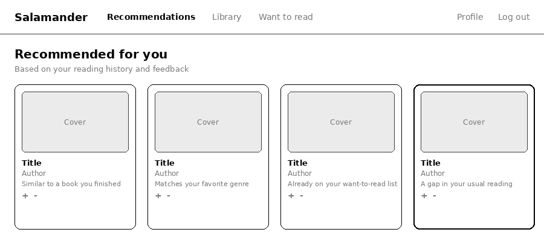

Who I am, and what I'm building
I'm Jerlisa Williams, an M.S. Computer Science student at Full Sail University with a background in web design — which is why I care as much about whether a model's output is usable as whether it's accurate. Post-graduation I'm aiming for Data Science first, Software Engineering or AI Engineering second. This is the first entry in a monthly log of my capstone, Salamander: a reading-recommendation app that gives brand-new ("cold-start") users relevant book suggestions before the system knows their taste, while keeping those suggestions diverse across genre and author. I also scoped a forecasting project, Raven, before deciding Salamander was the stronger year-long bet.
What I built this month
Mostly architecture, not code. Salamander is a scope-restarted
rebuild of an earlier personal library app — same React and
Supabase stack, blank-page design instead of just extending what
existed. The core is a dual-centroid approach:
the recommender and the diversity auditor both read from one
pretrained sentence-embedding space (all-MiniLM-L6-v2),
but compute two different centroids from it — one feedback-weighted,
driving recommendations, one left unweighted, auditing how much
genre and author diversity is actually on offer.

Fig. 1 — Recommendations dashboard mockup. The fourth card, with the bolder border, is a diversity-gap suggestion rather than a feedback-weighted one.
Fig. 2 — One embedding space, two centroids: one drives what gets recommended, the other checks how diverse those recommendations actually are.
My advisor, Dr. Amakobe, confirmed Salamander over Raven and proposed comparing content-based, collaborative, and hybrid recommendation strategies against precision, recall, NDCG, coverage, novelty, and diversity — with a user-facing control to adjust exploration. That's now a real evaluation harness on the roadmap, and the roadmap itself grew a fourth milestone to hold it. The diversity control specifically will be evaluated with a randomized A/B design — automatic diversity weighting against user-adjustable — the same split I'm already drafting IRB consent paperwork for.
Retrospective
What went right: real committee buy-in instead of a vague app pitch, and a tech stack I didn't have to relearn from zero.
What went wrong: no working prototype yet — the scope restart ate real time, and September is mostly diagrams, not a running app.
How I'll improve: weekly build milestones instead of one big end-of-month target, and building the evaluation harness alongside the recommender instead of retrofitting metrics onto it afterward.
I don't think October will turn into a rebuild — but I hope it doesn't turn into a caffeine-induced haze where I'm rushing to make up for time lost on unaccounted-for issues that cascaded.